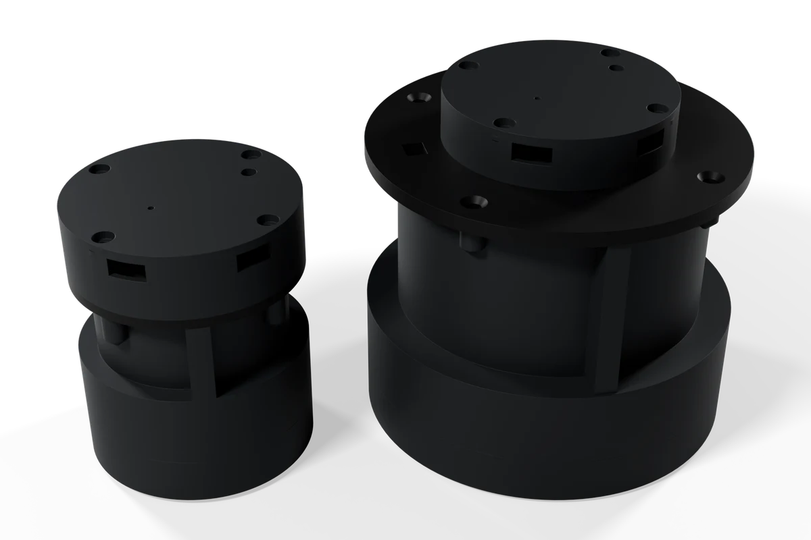
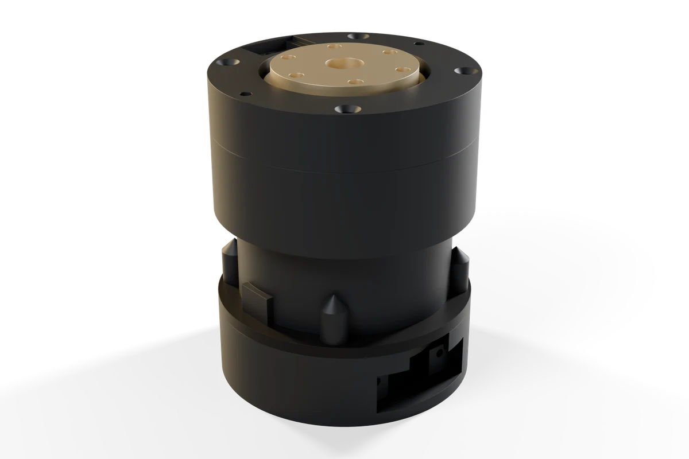
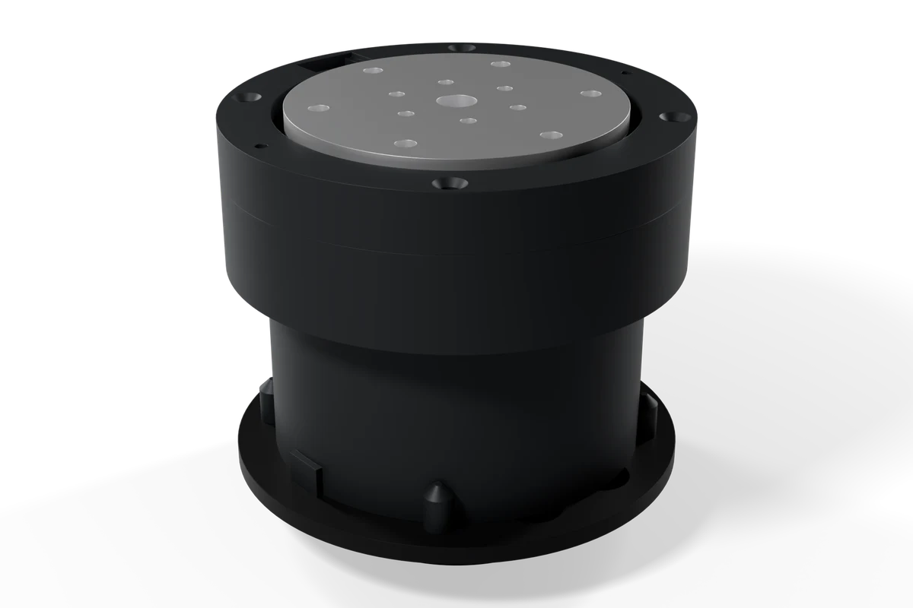
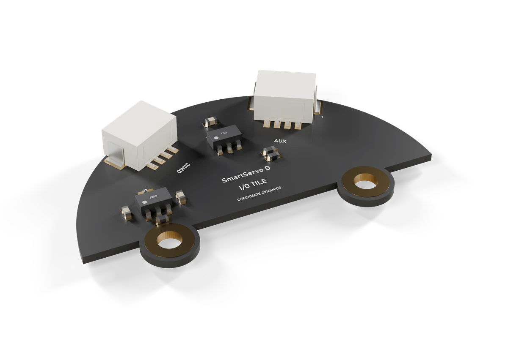
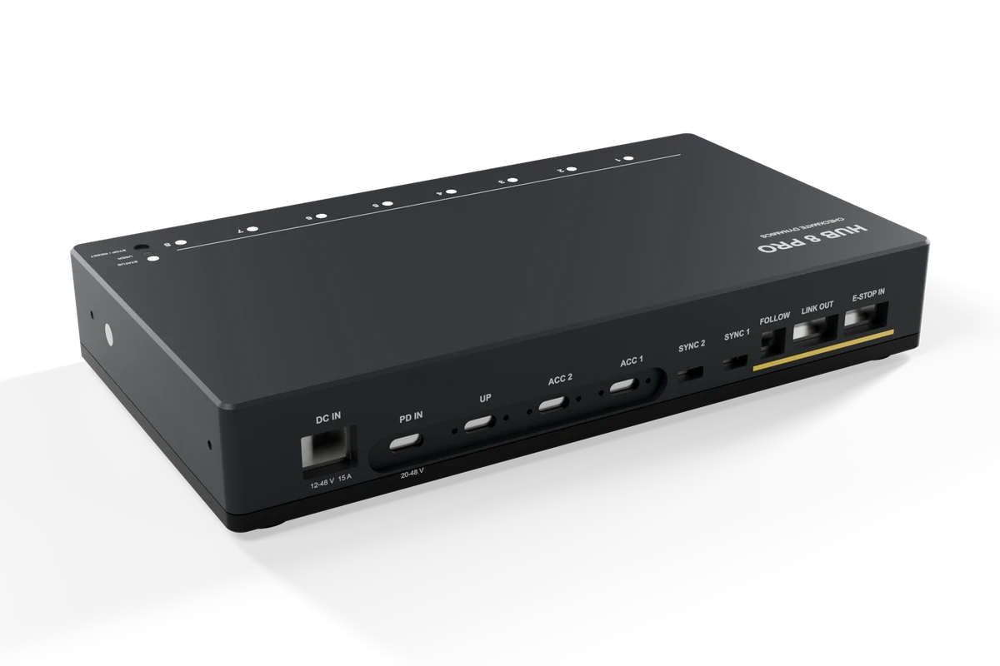

SmartServo G
A complete brushless actuator: gimbal motor, field-oriented control, magnetic encoder and housing, on one USB-C cable. The Checkmate Leader is built from these.
Planned prices. Not on sale yet.

G-2804 · iFlight GBM2804H-100T G-5208 · iFlight GM5208, 24 winding
Built for feel and fidelity, not raw force.
Quiet
Field-oriented control on a gimbal motor: smooth motion with no stepping and almost no sound.
Absolute
A 14-bit encoder on the motor axis with calibration stored on the node. Geared versions add an output encoder.
Backdrivable
Move it by hand and record the motion. Made for leader arms, wrists, grippers, camera heads and haptics.
One cable
USB-C PD power and CAN-FD between nodes on the same cable. Setup runs in the Checkmate app in your browser.
Not for lifting shoulders or wheels. For those you want a higher-torque actuator, and we’ll say so.
No gearbox between you and the motor.
G-2804 · Direct and G-5208 · Direct are complete nodes with the gimbal motor driving your load. Both use the same board, the same cable and the same app as the geared nodes.
Backdrivable
With no gear stage to fight, the shaft can be moved by hand. That is the feel haptics, knobs and hand-held controls depend on.
Smooth and quiet
Field-oriented control on a gimbal motor, with no gear stage to add backlash.
Test fixtures and benches
Rate tables, load stages, camera heads and teaching benches need speed and clean torque more than reduction. The G-5208 · Direct is the larger of the two.
Planned list prices USD 159 and USD 249. Torque is measured per unit and printed on the test card. Direct-drive output covers and frames are in design.
 I/O tile (optional)
Ø35 mm controller board
Base plate
Gimbal motor
I/O tile (optional)
Ø35 mm controller board
Base plate
Gimbal motor
A round board that sits on the motor.
Controller, driver and encoder share one board on the motor’s back. The optional I/O tile stacks on top, and an aluminum cover closes it.
- STM32G431 controller, DRV8316 driver
- USB-C PD sink, capped at 20 V
- Calibration stored on the node
- Two dowels in every cap face for repeatable swaps
Two motors, direct or geared.

Compact and light. Direct drive for handle roll, camera pan and haptic knobs. The 20:1 cycloidal for wrists, grippers and leader joints.

Larger and stronger. Direct drive for haptics and camera heads. The 25:1 cycloidal for the heavier joints of a leader arm.
| G-2804 · Direct | G-2804 · 20:1 | G-5208 · Direct | G-5208 · 25:1 | |
|---|---|---|---|---|
| Motor | iFlight GBM2804H-100T | iFlight GM5208, 24 winding | ||
| Reducer | Direct | 20:1 cycloidal | Direct | 25:1 cycloidal |
| Lost motion | 0 | ~8 arcminEstimate | 0 | ~4 arcminEstimate |
| Encoders | Motor, 14-bit | Motor + output | Motor, 14-bit | Motor + output |
| Torque | Measured per unit and printed on the test card; curves published after the first batch | |||
| Controller / driver | STM32G431 / DRV8316 | |||
| Power | USB-C PD sink, 5–20 V | |||
| Bus | CAN-FD on the USB-C cable; classic CAN when mixed with SmartStepper | |||
| I/O | Optional tile | Tile included | Optional tile | Tile included |
| Software | Checkmate browser app over USB (Chrome, Edge) · Python SDK · LeRobot | |||
Design values. Estimates and targets are marked; each unit ships with its own measured test card.

D3 · I/O tile
Stacks on the board. Adds Qwiic and a 4-pin AUX port for sensors, endstops and triggers.
USD 19 plannedB3 · Output encoder
A 3-axis magnetic sensor and ring magnet in the reducer cap. Standard on geared nodes, sold for retrofit.
USD 29 planned
D2 · Bus cable
Full-featured USB-C carrying power, USB and CAN, with a clip that holds it in the port.
In the box